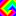

A bunch of lightweight components for updating the model stored in React's stateful components for fast prototyping. It fits strings, numbers (automatically detected) as <Input />, booleans as <Check />, and sets of values as <Radio />. This package also provides a component for presets of values (<PresetsBlock/>) and a helper to reduce repeats (<Connector />). More →
Package: npm
Examples of usage:  Griffeath's machine, Red Squares (with Redux), Zero Packer, and RGB Filter